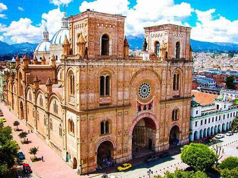
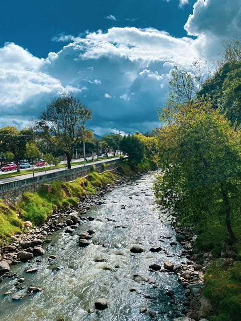
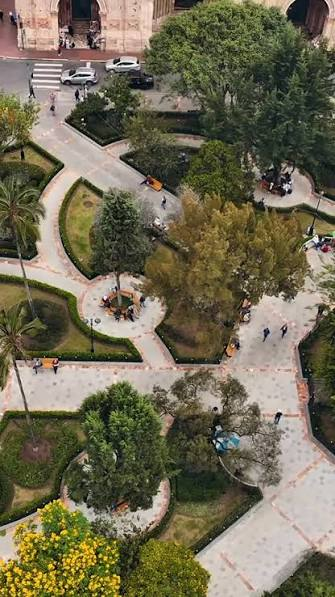

La Catedral
La Catedral de la Inmaculada Concepción, conocida como Catedral Nueva, es el símbolo del centro histórico. Sus cúpulas azules se ven desde muchos puntos de la ciudad.
Patrimonio Cultural de la Humanidad
Cuenca, oficialmente Santa Ana de los Ríos de Cuenca, es una ciudad del
sur de Ecuador y capital de la provincia del Azuay. Está ubicada
a unos 2.500 metros sobre el nivel del mar, en un valle andino atravesado por
cuatro ríos: el Tomebamba, el Yanuncay, el Tarqui y el Machángara.
Es una ciudad tranquila, cultural y llena de tradiciones.
Su centro histórico conserva calles empedradas, casas coloniales con balcones de madera, plazas, iglesias y talleres de artesanos. Por todo ello fue declarada Patrimonio Cultural de la Humanidad por la UNESCO. Además, es muy conocida por la elaboración de sombreros de paja toralla, mal llamados "panama hats", y por su vida universitaria y artística.
En este sitio encontrarás un resumen de su historia, los lugares más representativos para visitar y los platos típicos que no te puedes perder. También puedes escribirnos desde la sección de contacto.

La Catedral de la Inmaculada Concepción, conocida como Catedral Nueva, es el símbolo del centro histórico. Sus cúpulas azules se ven desde muchos puntos de la ciudad.

Es uno de los cuatro ríos que atraviesan la ciudad. A sus orillas hay senderos, puentes y casas antiguas ideales para una caminata tranquila.

Es el corazón de la ciudad, rodeado de edificios históricos. Es el lugar de encuentro de familias, estudiantes y turistas durante todo el día.
Mira este recorrido en video para conocer Cuenca desde otra perspectiva y apreciar la arquitectura de su centro histórico.